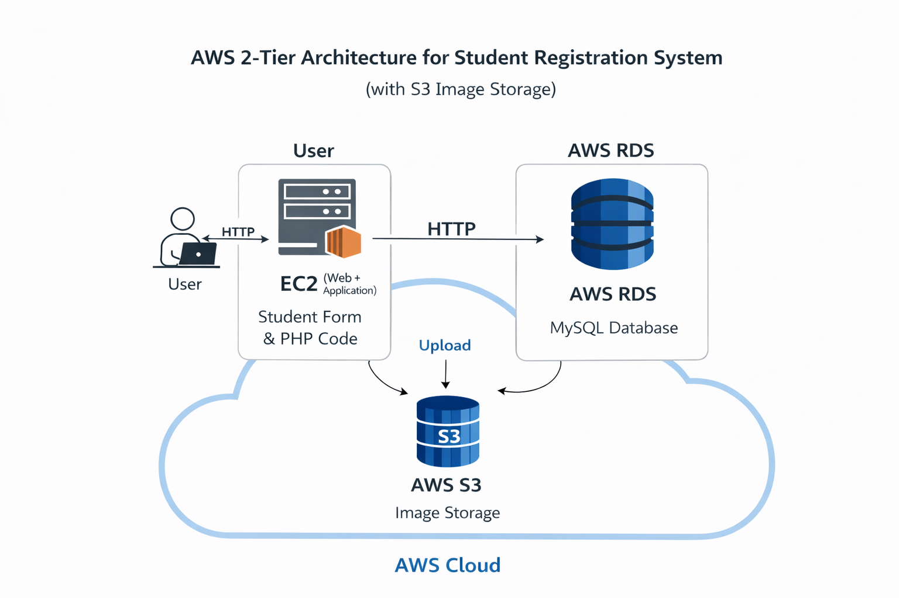
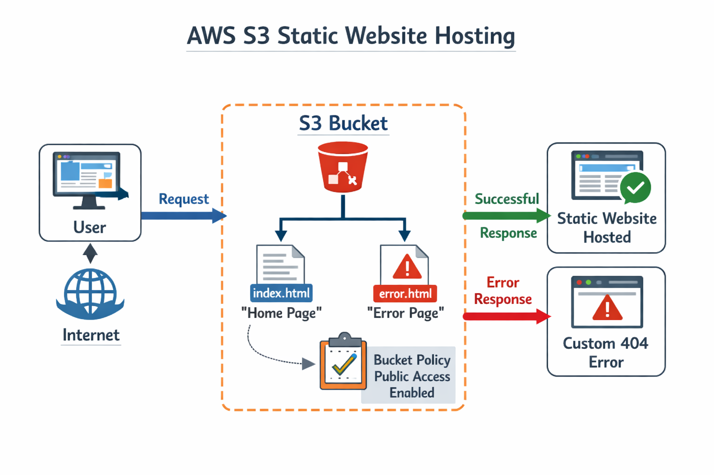

My Projects
Some of my AWS & DevOps hands-on projects
AWS 2-Tier Web Application
This project demonstrates a simple 2-Tier web application architecture on AWS. I created a custom VPC and launched an EC2 instance to host the web server. Amazon RDS was used to manage the database and S3 was used to store static files. This project helped me understand how multiple AWS services work together to deploy and manage a scalable web application.

View Code
AWS S3 Static Website
In this project I deployed a static website using Amazon S3. I created website files using HTML and CSS, uploaded them to an S3 bucket, and enabled static website hosting. A public bucket policy was added so the website can be accessed through the internet. This project helped me learn how AWS S3 can be used to host fast and cost-effective static websites.

View Code
AWS EC2 Web Server Deployment
This project focuses on hosting a website using an AWS EC2 instance. I launched an EC2 server, connected to it using SSH, and installed the Apache web server. After that I deployed my website files and configured security groups to allow HTTP access. This project helped me understand how websites are deployed and managed on cloud servers.

View Code